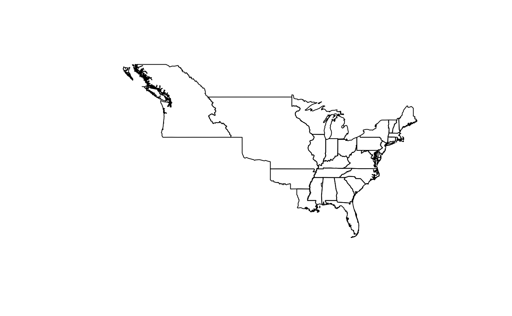
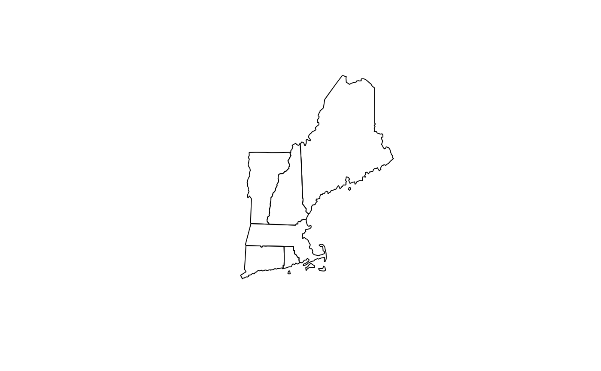
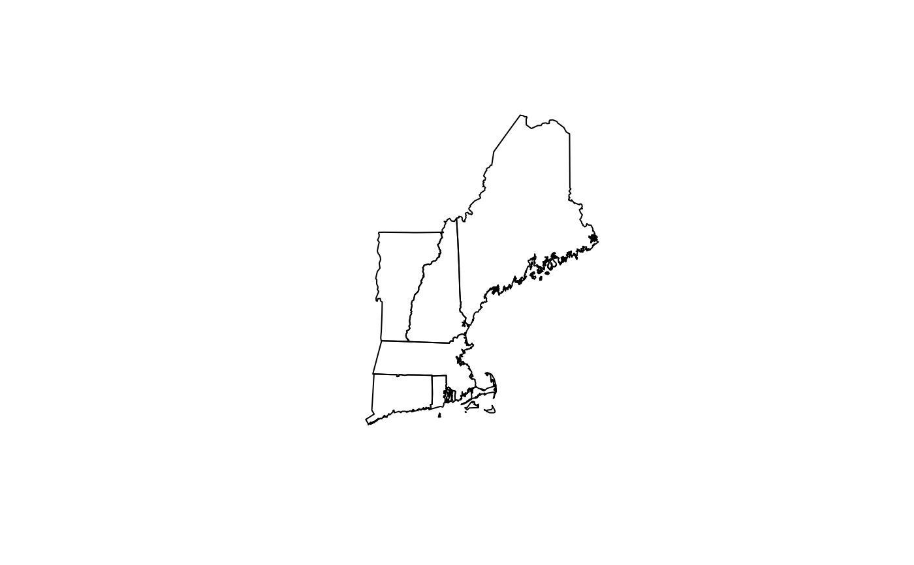

Get the current (2019) boundaries for U.S states from the U.S. Census Bureau, or get historical state boundaries for dates between 3 September 1783 and 31 December 2000.
Usage
us_states(map_date = NULL, resolution = c("low", "high"), states = NULL)Arguments
- map_date
The date of the boundaries as some object coercible to a date with
as.Date(); the easiest option is a character vector following the ISO 8601 data format. IfNULL(the default) the contemporary boundaries will be returned.- resolution
The resolution of the map.
- states
A character vector of state or territory names or abbreviations. Only boundaries for those states/territories will be returned. If
NULL, all boundaries will be returned.
See also
For documentation of and citation to the underlying shapefiles for
contemporary data from the U.S. Census Bureau, see census_boundaries
documentation in the USAboundariesData package. For documentation of and
citation to the underlying shapefiles for historical data from the Atlas of
Historical County Boundaries, see the ahcb_boundaries documentation
in the USAboundariesData package.
Examples
contemporary_us <- us_states()
if (require(USAboundariesData, quietly = TRUE) && require(sf, quietly = TRUE)) {
historical_us <- us_states("1820-07-04")
contemporary_ne <- us_states(
states = c(
"Massachusetts",
"Vermont",
"Maine",
"New Hampshire",
"Rhode Island",
"Connecticut"
)
)
historical_ne <- us_states(
as.Date("1805-03-12"),
states = c(
"Massachusetts",
"Vermont",
"Maine",
"New Hampshire",
"Rhode Island",
"Connecticut"
),
resolution = "high"
)
plot(st_geometry(contemporary_us))
plot(st_geometry(historical_us))
plot(st_geometry(contemporary_ne))
plot(st_geometry(historical_ne))
}


